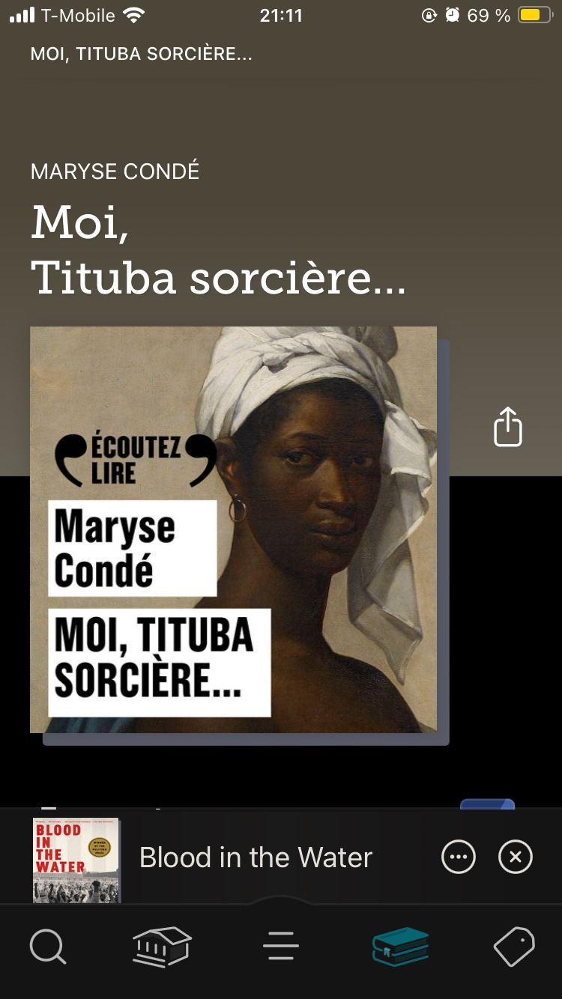
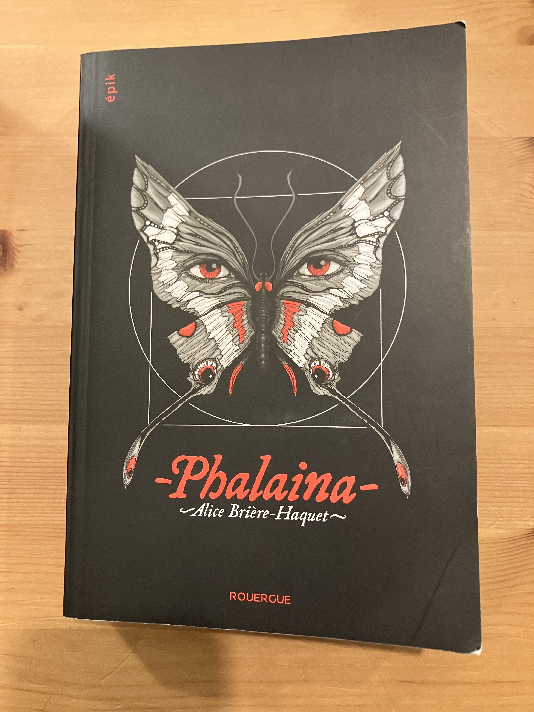
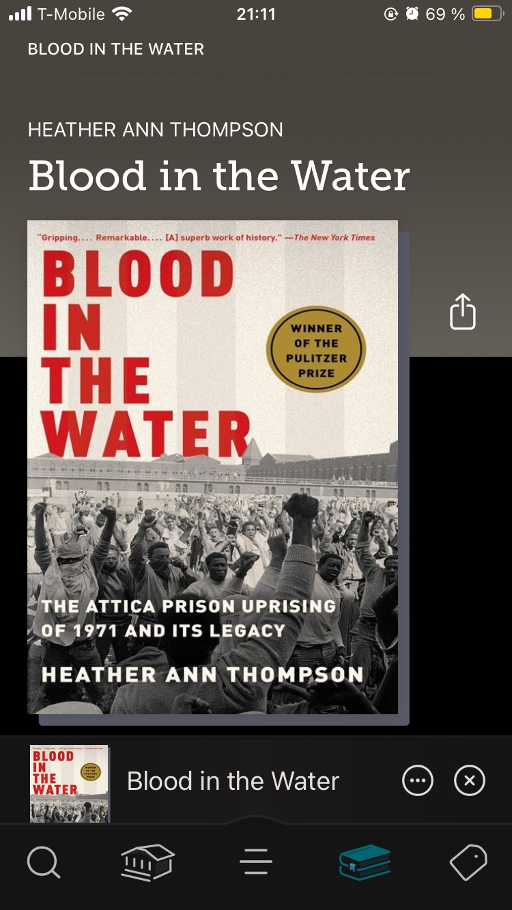

I've got LOTS of opinions on books -- much more than can be expressed here! Below is a list of my current favorites, organized into fiction, non-fiction, and children's/young adult:
Genre
Books
Adult Fiction
The Most Secret Memory of Men by Mohamed Mbougar Sarr
All This Could Be Different by Sarah Thankam Mathews
Confessions of The Fox by Jordy Rosenberg
Gold Diggers by Sanjena Sathian
The Free People's Village by Sim Kern
A Love Song for Ricki Wilde by Tia Williams
Adult Non-Fiction
The White Mosque by Sofia Samatar
A Little Devil in America by Hanif Abdurraqib
Stay True by Hua Hsu
Ace by Angela Chen
"You Just Need to Lose Weight" and 19 Other Myths About Fat People by Aubrey Gordon
How Far the Light Reaches by Sabrina Imbler
Children's and Young Adult
Howl's Moving Castle by Diana Wynne Jones
The Luis Ortega Survival Club by Sonora Reyes
Tristan Strong Punches a Hole in the Sky by Kwame Mbalia
How the Boogeyman Became a Poet by Tony Keith Jr.
Diary of a Young Naturalist by Dara McAnulty
The Tryout by Christina Soontornvat



What I'm Reading Right Now
I'm always reading at least three books at a time, one e-book, one physical book, and one audiobook. Here's what I've got going on at the moment: